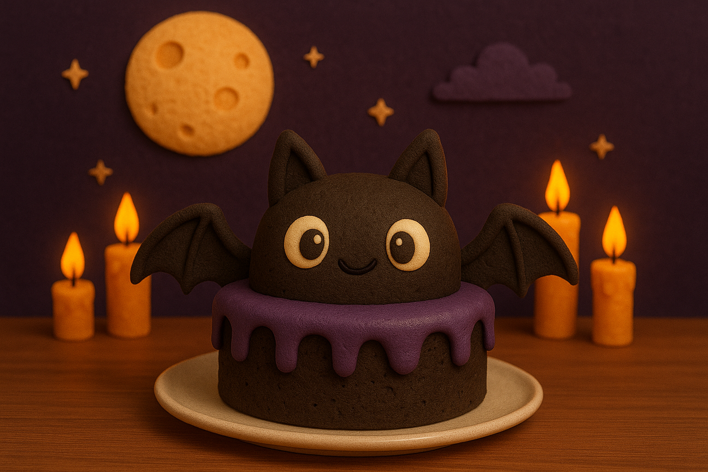

Receita Assombrada: Bolo de Morcego da Bruxa Morgana
Uma delícia macabra para assustar (e adoçar) seus convidados!
Em uma noite de lua cheia, a bruxa Morgana decidiu compartilhar sua receita secreta de bolo de morcego.
Prepare-se para uma mistura de sabores sinistros, poções doces e muito mistério!

Ingredientes
- 2 xícaras de açúcar encantado ✨
- 3 colheres de pó de teia de aranha 🕸️ 🕷️
- 1 xícara de leite de fantasma 🥛 👻
- 4 ovos de corvo preto 🥚 🐦⬛
- 1 pitada de poeira lunar 🌌
- 200g de chocolate das sombras 🍫
Modo de preparo
- Em um caldeirão, misture o açúcar e os ovos de corvo até formar uma poção espumante.
- Adicione o leite de fantasma e o chocolate das sombras derretido.
- Acrescente o pó de teia de aranha e a poeira lunar.
- Cozinhe em fogo baixo enquanto recita:
- “Doces ou travessuras, que este bolo ganhe vida!”
- Sirva ainda morno, sob a luz de uma vela tremeluzente. 🕯️
Feito com amor e um toque de magia negativa 💀